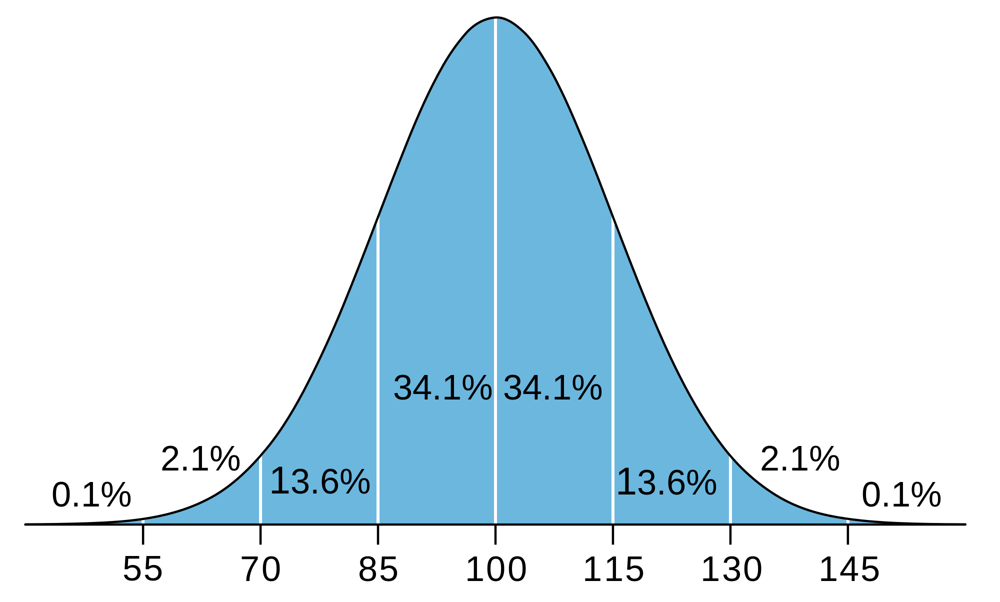

C'est quoi l'intelligence?
L’intelligence
présente l’ensemble des capacités mentales d’un individu,
les facultés de comprendre, de connaitre les faits ce qui permet à
l’Homme de s’adapter avec son environnement et c’est ce qu’il lui
distingue des autre espèces.
La mesure de l'intelligence est-elle absolue?
Non. Il ne s’agit pas d’une mesure
directe comme on peut mesurer la taille d’une
personne avec un mètre mais une mesure indirecte
comme mesurer la taille d’une personne en
se référant a la taille de son ombre sur un sol inégal.
On a
des differents types d'intelligence:
-
Intelligence verbale-linguistique
C'est la capacité d'utiliser les mots efficacement, oralement ou par écrit.
On la reconnaît chez une personne qui aime lire, raconter ou entendre des histoires, parle facilement, pratique les jeux de mots.

-
L'intelligence logico-mathématique
C’est la capacité à calculer, quantifier, résoudre des problèmes mathématiques, émettre des hypothèses, être à l’aise avec l'abstrait, les symboles et les signes mathématiques.
C'est posséder une pensée déductive un fait en entraîne un autre et aimer les problèmes impliquant la logique.

-
L'intelligence corporelle-kinesthésique
C'est la capacité à utiliser son corps pour communiquer, à manipuler des objets délicats et à réussir des mouvements très précis
On reconnaît cette forme d'intelligence chez une personne qui utilise son corps pour vivre ses émotions, communique bien par gestes, est compétent en coordination, dextérité, flexibilité

-
L'intelligence spatiale
C'est la capacité de penser en trois dimensions, de faire de l’imagerie mentale, de raisonner de façon spatiale, de manipuler des images graphiques et de voir des actions en images visuelles de façon mentale.
On la reconnaît chez des personnes qui perçoivent l'espace visuo-spatial, sont sensibles aux formes et aux couleurs...

-
L'intelligence musicale
C'est la capacité de distinguer des rythmes, des timbres sonores, de percevoir des sons, de rendre des émotions en musique, écrire des partitions…
On la reconnaît chez des personnes qui jouent un instrument, écrivent des chansons.

-
L'intelligence des autres ou interpersonnelle
C'est la capacité de bien communiquer avec les autres, de percevoir leurs humeurs, intentions, motivations et émotions, d’être sensible aux messages gestuels.

-
L'intelligence de la conscience de soi ou intrapersonnelle
C'est la capacité de bien se connaître, de comprendre ses émotions, de mettre des mots sur sa démarche personnelle. On la reconnaît chez une personne qui a une bonne connaissance d'elle-même forces et faiblesses et agit en conséquence.

-
L'intelligence naturaliste
C'est la capacité d'être attentif au monde vivant, aux espèces animales, végétales, d'observer les espèces, de comprendre les écosystèmes... Le chasseur, l'indigène qui sait vivre en symbiose avec la nature, mais aussi le naturaliste, le photographe animalier ont cette forme d'intelligence.

-
L’intelligence existentielle
L’intelligence existentielle est l’intelligence des penseurs profonds et des philosophes. Elle pousse les gens à remettre en question l’existence elle-même.
L’intelligence existentielle, ou intelligence spirituelle se définit par l’aptitude à se questionner sur le sens et l’origine des choses.

Donc comment mesure-t-on l'intelligence?
Le QI est la réponse
a cette question.
Le quotient intellectuel ou QI est une mesure
valeur numérique de la capacité intellectuelle que chacun
d´entre nous possède à un niveau plus ou moins élevé par rapport à la
moyenne d´un groupe. Les tests de QI ont aidé dans la naissance du
mouvement eugéniste.

Les tests de QI on évolué au cours du temps. Voici les plus importants
-
Le WAIS et le WAIS-R
En 1939, David Wechsler, psychologue américain, publia une batterie de tests à l'intention des adultes afin de mesurer leur intelligence.
Il modifie le traitement statistique des tests afin d'avoir des résultats non plus en âge mental, ni en QI, mais en rang par rapport à une population, l'individu étant comparé non plus à des personnes d'âges différents mais à la population de son âge
Le WAIS est l'échelle d'intelligence pour adultes de Wechsler.
Il a été standardisé en 1954.
Quant au WAIS-R, il s'agit tout simplement de la version révisée de ce dernier; sa standardisation date elle de 1978.
Le test est divisé en 2 groupes de subtests, permettant d'obtenir une mesure de QI verbal culturel et de QI de performance aculturel.
Six épreuves verbales : information et compréhension générales, raisonnement arithmétique vocabulaire.
Cinq épreuves de performance mettant en jeu les qualités perceptives et les capacités d'analyse et de raisonnement du sujet : classement et complètement d'images.
Maintenant, il existe le WAIS III, appliqué depuis 2000.
Le WAIS-III inclut des indices plus spécifiques: Compréhension Verbale, Organisation Perceptive, Vitesse de Traitement et Mémoire de Travail.
-
Le WISC
Le WISC est utilisé entre 6 ans et 16 ans et 9 mois.
Le WISC Weschler Intelligence Scale for Children est l'échelle d'intelligence pour enfants de Wechsler.
Il comporte:
5 sous-tests verbaux : test d'information, de compréhension, d'arithmétique, de vocabulaire, de similitudes,
5 sous-tests de performance, dans lesquels l'enfant doit copier des dessins à l'aide de cubes à motifs, ordonner un ensemble d'images, ...
Par convention, la moyenne obtenue par chaque tranche d'âge de l'échantillon standardisé correspond à un score au QI de 100. De nouveau par convention, la déviation standard par rapport à cet échantillon équivaut à 15 points de QI de différence. Pour un bon échantillonnage et une distribution normale, cela signifie que les 2/3 environ de la population d'une classe d'âge ont un QI compris entre 85 et 115.
Le QI reflète alors une position relative d'un individu par rapport à sa classe d'âge, et non un résultat isolé.
-
Le test de Stanford Binet
Le premier véritable test de QI moderne a été mis au point par Alfred Binet 1857-1911 en 1905.
C'est la première Échelle Métrique de l'Intelligence, échelle de développement qui estime le degré de développement intellectuel de l'enfant
Le test Binet ou test Binet Simon avait déjà quasiment toutes les caractéristiques des tests actuels. Ses questions ont été posées à un très grand nombre d'enfants. À chaque question correspond un "âge intellectuel", qui est l'âge auquel la moitié des enfants au moins est capable de répondre à la question.
Enfin, selon les questions sur lesquelles l'enfant bloque, il est possible d'évaluer sa maturité intellectuelle.
Le Stanford Binet
En 1916, Lewis Terman un psychologue de l'université américaine de Stanford établi un nouveau test d'intelligence inspiré des travaux de Binet et Stern, le Stanford-Binet. Terman introduisit alors la notion de "quotient intellectuel" qui donna naissance au test de QI tel qu'on le connait aujourd'hui. Il propose une échelle de calcul couvrant les différentes facettes de l'intelligence.
-
Le K.ABC
Le K.ABC Kaufman Assessment Battery for Children s'adresse aux enfants âgés de 2 ans 1/2 à 12 ans 1/2.
Ce test a pour but de mesurer l’intelligence et les connaissances, son originalité est qu'il mettrait plus l’accent sur le processus que sur le contenu.
Le K.ABC s’appuie comme le mentionne Dr. Alan Kaufman, le moins possible sur le langage, les informations et les compétences acquises. Ces échelles font appel à la notion d’intelligence fluide définie par Cattell et Horn 1966 c’est-à-dire comme un fonctionnement souple et adaptable face à des problèmes liés à des situations nouvelles.
Un avantage du K.ABC est de tester des enfants présentant des handicaps auditifs, des troubles de la parole ou du langage ou non francophones, les tâches qui le composent pouvant être indiquées par gestes et les réponses se situer uniquement dans le registre moteur.
-
Les Matrices de Raven
John C. Raven s'intéressa à la notion que l'intelligence implique la capacité de gérer des termes abstraits: à développer un système de raisonnement logique à partir d'éléments abstraits. Ce test a été développé juste avant la 2ème guerre mondiale et a connu un nombre considérable de versions.
Comment le test marche:
Ces recherches aboutirent à la construction d'un ensemble de matrices 3x3 remplies de figures abstraites. La troisième case de la troisième ligne étant vide, la tâche du sujet est de sélectionner dans un ensemble la figure qui correspond à la suite de la troisième ligne en raisonnant à partir des deux premières.
Les Matrices de Raven sont donc des tests à choix multiples et peuvent être administrées sur un grand nombre d’individus en même temps. L'avantage de ces épreuves est qu'elles peuvent être utilisées avec des sujets sourds ou des sujets dont la langue maternelle est différente de celle de l'expérimentateur
Nous avons réalise un test de QI pour plusieurs personnes dans notre classe. Vous pouvez vous testez à mon-qi.com